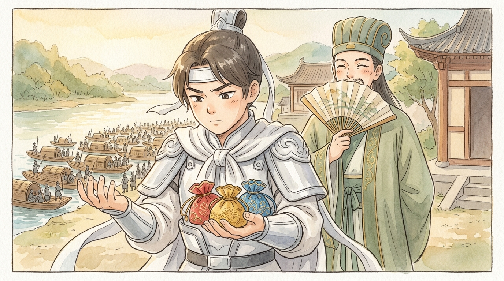
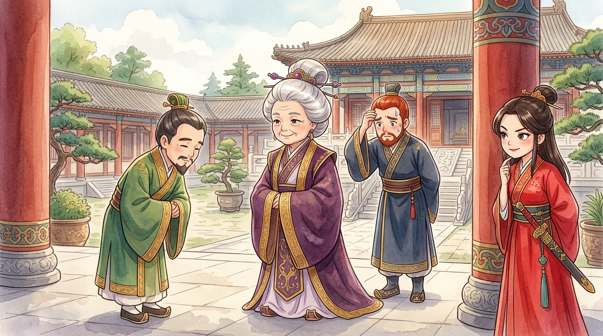
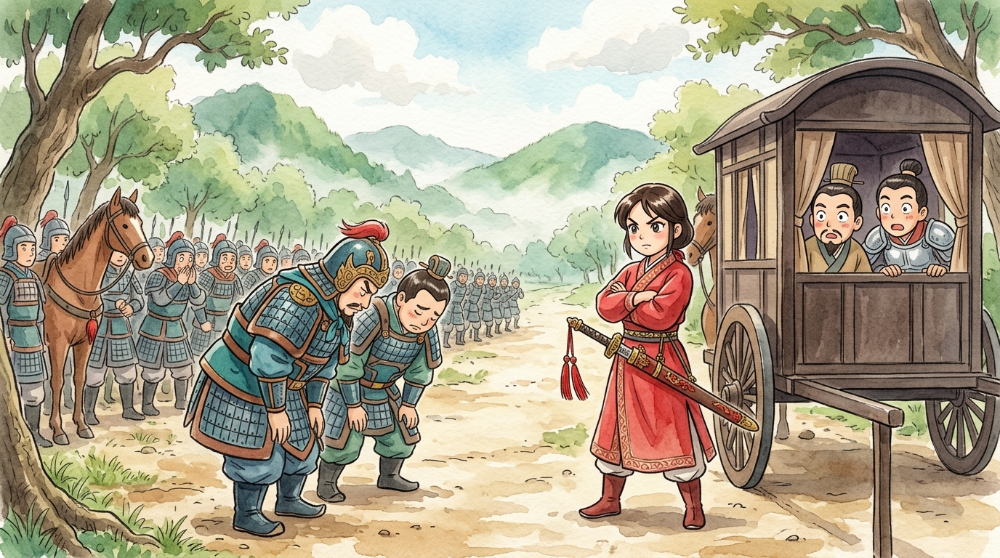

⚠️ TOP SECRET — SHU INTELLIGENCE ARCHIVE. Mission code name: OPERATION WEDDING BELLS. Year: 209 CE. Threat assessment: our lord Liu Bei (劉備) has been invited to the kingdom of Wu (吳)… to get married. Intelligence confirms the invitation is a trap designed by Commander Zhou Yu (周瑜): once our lord crosses the river, he will be held hostage and traded for the city of Jingzhou (荊州).1 Mission approved anyway. Why? Because Director Zhuge Liang (諸葛亮) read the enemy plan… and liked it.
🕵️ Mission equipment: three envelopes
Director Zhuge Liang could not join the mission — so he did something stranger. He summoned the bodyguard assigned to protect our lord: General Zhao Yun (趙雲) — yes, the hero of Changban, still the safest pair of hands in the kingdom — and issued him exactly three items. Three small pouches of embroidered silk (錦囊), sealed tight, numbered one, two, three.
Field note from General Zhao Yun: "I protect people from armies. Now I'm guarding envelopes. The Director smiled when he handed them over. That smile always means somebody, somewhere, is about to have a very bad month. I hope it's not me."

🕵️ Pouch #1: Make it LOUD
The mission party landed in Wu — five hundred soldiers, one nervous lord, one calm bodyguard. Zhao Yun broke the first seal. The plan inside was, frankly, bizarre: tell everyone about the wedding. The enemy's trap depended on secrecy — a quiet "wedding" no one would miss when it turned into a kidnapping. So our soldiers marched through the markets buying wedding gifts, red silk and candles, loudly announcing the happy news to every shopkeeper in the capital. Liu Bei paid a respectful visit to the old nobleman Qiao (喬國老), who immediately toddled off to congratulate the bride's mother…
…the Dowager (吳國太) — Sun Quan's (孫權) mother — who knew NOTHING about any wedding. Imagine her face. Her daughter, used as bait, and all the neighbours knew before she did?! The palace shook. Sun Quan stared at his shoes while his mother thundered. Finally she declared: "I will inspect this Liu Bei myself. If I like him, he becomes my son-in-law FOR REAL. If not — then you may do as you like with him."
They met at the temple of Ganlu (甘露寺). Liu Bei — kind-eyed, dignified, famously respectful — bowed to the Dowager, and she was charmed within minutes. "A hero!" she announced. "He shall marry my daughter!" And just like that, the FAKE wedding became a REAL one. Zhou Yu's mousetrap had snapped shut… on Zhou Yu.2
And the bride? Lady Sun (孫尚香) turned out to be no prize to be handed about — she was a warrior princess whose chamber maids drilled with swords, which gave our lord quite a fright on the wedding night. The couple, records show, actually got on splendidly.

🕵️ Pouch #2: The golden cage
With the hostage plan ruined, Zhou Yu sent new instructions: if we cannot cage the tiger, let us make him forget he is a tiger. Liu Bei was given a palace of delights — feasts, music, gardens, a wonderful new wife. And it worked! Weeks became months. Our lord grew comfortable, then cheerful, then… forgetful. Field note from Zhao Yun: "My lord has not mentioned Jingzhou in fifty-eight days. Yesterday he called it 'Jing-something.' I am a bodyguard, not a babysitter. Opening Pouch #2."
The second plan was a single sentence to be whispered to Liu Bei: "Cao Cao (曹操) is marching on Jingzhou with 500,000 men — your kingdom needs you NOW." A lie? A prediction? With the Director, who can ever say. But it struck like cold water. Liu Bei woke from his golden dream, remembered who he was, and — here is the delightful part — his warrior bride chose to escape WITH him. On New Year's Day, while the whole court celebrated, the couple slipped out of the city disguised as travellers going to honour ancestors by the river.3
🕵️ Pouch #3: The princess plays her card
Of course, the escape was discovered. Wu cavalry thundered after them; ahead, more troops blocked the road, led by Zhou Yu's own officers. Enemies behind, enemies ahead, a river with no boats. Liu Bei turned to his bodyguard in despair — and Zhao Yun smiled, for the first time all mission, and broke the third seal.
The plan: tell everything to Lady Sun — and stand back.
Liu Bei knelt before his bride and confessed the whole tangle: the fake wedding, the trap, the trade. Lady Sun listened. Her eyes narrowed. Her own brother had used her as BAIT? She rolled up the carriage curtain, marched out in front of the blocking troops, and delivered a royal scolding so magnificent that hardened officers stared at the ground like schoolboys: "I am the daughter of the Dowager! This is MY husband! Which of YOU dares raise a blade against your own princess?! I shall report every one of your names to my mother!" The soldiers, who feared the Dowager far more than they feared Zhou Yu, melted aside.4

At the riverbank, as the last pursuers closed in, a line of boats slid out from the reeds — and there, under a canopy, sat Director Zhuge Liang himself, fan waving, tea poured, punctual to the minute. "I have been waiting," he said, "for quite some time." As the boats pulled away, our soldiers stood up and sang across the water toward the shore — the chant that would ring in Zhou Yu's ears forever:
🕵️ Mission debrief
MISSION STATUS: complete. Lord recovered. Bride gained. Enemy commander last seen turning crimson (see medical file 三戲周瑜, Case Note Two). But study the method, future agents. The Director never fought the trap — he redirected it. The enemy wanted a loud secret? He made it public. A golden cage? He rang an alarm. An armed roadblock? He sent a princess with a grievance. Every strength of the enemy plan became its weakness.5
And the deepest secret of this file: the three pouches were not really about the plans inside. They were about giving a brave man in the field the confidence to walk into a trap knowing help was already packed in his pocket. Good planning, agents, is a gift you wrap for the future. FILE CLOSED. 🕵️